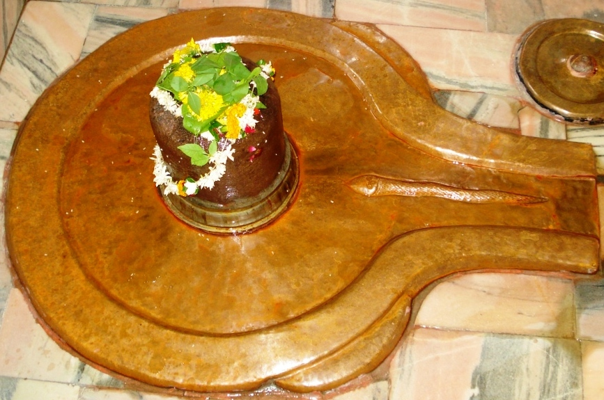

<?xml version="1.0" encoding="UTF-8"?><rss version="2.0"
	xmlns:content="http://purl.org/rss/1.0/modules/content/"
	xmlns:wfw="http://wellformedweb.org/CommentAPI/"
	xmlns:dc="http://purl.org/dc/elements/1.1/"
	xmlns:atom="http://www.w3.org/2005/Atom"
	xmlns:sy="http://purl.org/rss/1.0/modules/syndication/"
	xmlns:slash="http://purl.org/rss/1.0/modules/slash/"
	>

<channel>
	<title>Narmadeshwar &#8211; Varanasi Temples</title>
	<atom:link href="index.html" rel="self" type="application/rss+xml" />
	<link>../../../../../index.html</link>
	<description>Temples of Varanasi as referred to in Kashi Khand</description>
	<lastBuildDate>Thu, 19 Jun 2025 05:16:46 +0000</lastBuildDate>
	<language>en-US</language>
	<sy:updatePeriod>hourly</sy:updatePeriod>
	<sy:updateFrequency>1</sy:updateFrequency>
	<generator>https://wordpress.org/?v=4.6.29</generator>
	<item>
		<title>NARMADESHWAR</title>
		<link>../../../../../shiva-temples/narmadeshwar/index.html</link>
		<pubDate>Mon, 10 May 2010 15:20:37 +0000</pubDate>
		<dc:creator><![CDATA[admin]]></dc:creator>
				<category><![CDATA[Narmadeshwar]]></category>
		<category><![CDATA[Other Shiva Temples (L-R)]]></category>
		<category><![CDATA[Shiva Temples]]></category>
		<category><![CDATA[trilochan]]></category>

		<guid isPermaLink="false">../../../../../p=418.html</guid>
		<description><![CDATA[Once there was a discussion among various Sages (Rishis) as to which is the most divine river. There were four important rivers, Ganga, Yamuna, Saraswati and Narmada.   The unanimous answer was Ganga.  Ganga was symbolic of Rig Veda, Yamuna symbolic of Yajur Veda and Narmada of Sama Veda. She came to Kashi, installed a Ling [&#8230;]]]></description>
				<content:encoded><![CDATA[<p>Once there was a discussion among various Sages (Rishis) as to which is the most divine river. There were four important rivers, Ganga, Yamuna, Saraswati and Narmada.   The unanimous answer was Ganga.  Ganga was symbolic of Rig Veda, Yamuna symbolic of Yajur Veda and Narmada of Sama Veda.</p>
<p>She came to Kashi, installed a Ling near Trilochaneshwar near Pilpila Teerth and started invoking Lord Shiva, who appeared before her and granted her a divine wish.  Narmada only craved for the divine bhakti and darshan of the Lord.</p>
<p></p>
<p style="text-align: center;"><strong>(NARMADESHWAR)</strong></p>
<p>Lord Shiva granted that all stones in the river bed of Narmada will be treated as Shiv Ling. He granted her one more divine wish.  A devotee who takes bath in Ganga is cleansed of his sins. A devotee who takes bath in Yamuna for one week is cleansed of his sin and one who takes bath for three days in Saraswati becomes pure.  However, if a devotee simply sees the river Narmada he will be cleansed of his sins.</p>
<p>Lord Shiva also granted that the Ling established by Narmada would be called as Narmadeshwar. This Ling will be capable of granting Mukti to its devotees.  Merely by looking at this Ling, a devotee will be cleansed of all his sins. After saying this, Lord Shiva disappeared into this Ling. (Kashi Khand, Chapter 92).</p>
<p>Lord Skanda who was narrating this to Sage Agasthya said that a girl who even listens to the Mahatmya or reads this chapter relating to Narmada will be cleansed of her sins.</p>
<p><strong><span style="text-decoration: underline;">LOCATION OF NARMADESHWAR</span></strong></p>
<p>Narmadeshwar is located at A-2/79, behind Trilochan.  People can travel upto this place by rickshaw upto Prahlad  Ghat Chauraha and approach this place via Trilochan which is a famous landmark.</p>
<p><strong><span style="text-decoration: underline;">TYPES OF POOJA</span></strong></p>
<p>Narmadeshwar is a stand alone temple which is open from 06.00 a.m. to 9.30 a.m. and from 6.00 p.m. to 7.00 p.m. Aarti is held in the evening.</p>
<p><strong><span style="text-decoration: underline;">POOJARIES OF THE TEMPLE</span></strong></p>
<p>Shri Kashinath is the poojari of the temple.</p>
]]></content:encoded>
			</item>
	</channel>
</rss>
